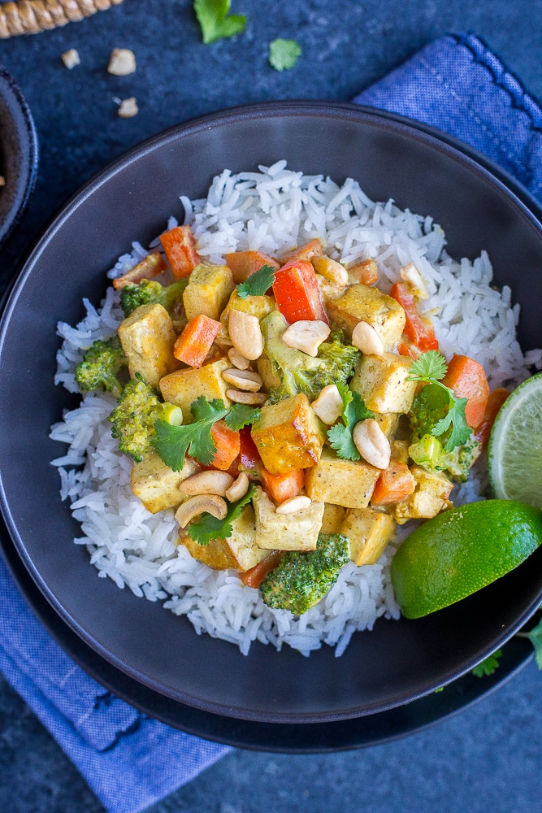

Coconut Curry with Tofu

This Easy Coconut Curry with Tofu is made in one pan and is perfect for an easy and delicious weeknight dinner!
It comes together in just 30 minutes and is made entirely in one pan!
Ingredients
- 1 teaspoon coconut oil
- 1 (14 oz) package extra firm tofu
- 1-2 teaspoons Tamara or soy sauce or about 1/4 teaspoon salt
- 1 small red pepper, diced
- 1 1/2 cups small broccoli florets
- 1 cup small diced carrot
- 1 clove garlic, minced or grated
- 1 can unsweetened coconut milk, I used full fat
- 2 teaspoons curry powder
- 1 1/2 teaspoons garam masala
- 3/4 teaspoon salt
- Optional toppings: roasted cashews, cilantro, lime wedges, green onion
Steps
- Cook rice according to package directions. Once finished cooking remove from heat and keep lid on until ready to eat. Fluff with a fork before serving.
- Pat tofu dry (you can press it if you like but that will take longer than 30 minutes) and cut into bite size pieces. Heat a large pan over medium heat and add coconut oil, tofu and tamari or salt. Stir, cover with a lid and let cook until browned, 5-7 minutes, stirring occasionally.
- Add the garlic and all the vegetables and cook another 3 minutes. Next, add the coconut milk, curry powder, garam masala and salt. Stir everything together well, cover with a lid and let cook until vegetables are tender, about 5 minutes.
- Divide rice into 4 equal portions and top with equal amounts of coconut curry. Add any desired toppings you like and enjoy!